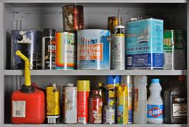

Home >
Government > Solid Waste Management > Hazardous Waste
Household Hazardous Waste
What is household hazardous waste?
Many of the products we use in our home and routinely discard with our trash are actually similar to regulated hazardous wastes produced by business and industry. Products which are corrosive (such as acids and alkalis), flammable, reactive, or toxic (poisonous) are found in most people’s home, garage or workshop.

Some examples are:
- Pesticides, herbicides, fungicides, and insecticides
- Mothballs
- Paint and paint thinners
- Furniture strippers and finishing products
- Used brake fluid, transmission fluid, gasoline, and antifreeze
- Solvents and degreasers
- Wood preservatives
- Nail polish and polish remover
- Oven cleaners and drain cleaners
- Furniture polishes and waxes
- Cleaners, including rug and upholstery cleaners, all purpose cleaners, souring powders, spot removers, and bathroom cleaners
- Swimming pool chemicals
- Metal polishes and rust removers
- Note: Not all brands of these products contain hazardous products. In some cases, manufacturers are developing less hazardous formulations; read the labels before you buy. In other cases, you may be able to find a less hazardous substitute, such as using baking soda as a gentle scrubbing powder. For some products, such as motor oil, there really are no alternatives currently available.
Why is household hazardous waste a problem?
There may be both short term and long term consequences from improper management of household hazardous wastes:
- Improper storage or use of hazardous products in the home may increase the risk of accidental poisoning or injuries. Disposal of household hazardous waste in ordinary refuse many injure sanitation workers. Some products are chemically incompatible, and may lead to fires in dumpsters or garbage trucks.
- Pouring waste down the drain puts it directly into septic tanks or sewage treatment plants, which often cannot filter our or properly treat hazardous materials. This can lead to contamination of groundwater (in your own backyard) or surface waters where treatment plants discharge.
- Burning household hazardous wastes may contribute to toxicity of air emissions or ash from municipal incinerators.
- Most sanitary (municipal) landfills are unlined and do not have sophisticated groundwater monitoring and protection systems. In the long run, household hazardous may contribute to leachate and eventual groundwater contamination.
What can I do about household hazardous waste?
Individuals really can make a difference!
- Educate yourself. Learn about the products you use in your home, garden and workshop, and about how waste is managed in your community.
- Try to find a non-hazardous or less hazardous substitute. Baking soda makes a good scouring powder, while lemon oil and beeswax works well as a furniture polish. Cedar shavings and aromatic herbs can replace mothballs.
- Use a plumber’s helper or snake to clear clogged drains instead of a caustic drain cleaner. In some cases, substitutes may require a little more “elbow grease” but are well worth the effort to protect your health and environment.
- Try to select the least hazardous product which will work for you. When you buy, buy only what you really need. The large economy size often is less economical when you consider disposal of leftovers.
- Always read and follow all directions and precautions on labels. Never mix products unless directed by the label. Two really individual products may react to be less useful, and may even be chemically incompatible, producing toxic fumes, fires or possibly explosion.
- Store hazardous products in their original container. If you must put something into another container, for example, when you change your motor oil, do not use food or beverage containers, and do label the container.
Hazardous Materials
What are hazardous materials?
- Many products used in the home, garage and garden contain hazardous ingredients and need to be used and stored safely. Once you decide to discard these products, they become household hazardous wastes requiring proper disposal. Household hazard wastes can be described as discarded solid or liquid materials or containers holding gases which may cause an adverse, harmful or damaging biological effect in an organism or the environment unless given special handling and treatment.
- Hazardous wastes usually account for a small portion of the waste stream, but can contaminate our water and soil if disposed of improperly. That’s why hazardous waste should not be disposed of with regular garbage or poured into the sewers.
- A substance is considered hazardous if it can catch fire, if it can react or explode when mixed with other substances, if it is corrosive, or if it is toxic. This definition includes many things that you probably are storing right now in your garage, basement, or kitchen. Some like paint thinner or car batteries are pretty obvious, but there are many that you might not ordinarily think of such as polishes, insecticides and glues.
What types of products might have hazardous characteristics?
- Examples of flammable products include many solvent-based materials such as varnish strippers, and driveway sealants. Some products will even spontaneously combust if improperly stored.
- Household items that may be corrosive include acidic or caustic cleaners such as toilet bowl cleaner, oven cleaner, and drain opener as well as batteries, especially car batteries.
- Reactive type chemicals can include strong peroxides, ammonia, chlorine based products, and mothballs.
- Toxic material includes antifreeze, pesticides, and wind shield washer fluid.